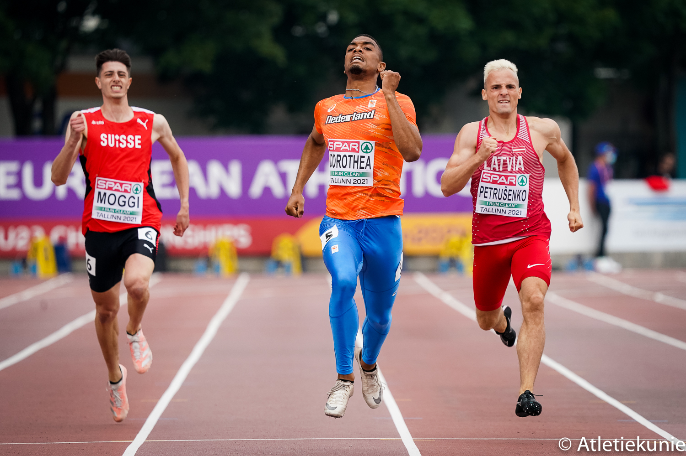

ABOUT ME
I was born on Curaçao, a small island in the Caribbean, and spent my entire life in the Netherlands
before coming to the U.S. for college. As a track athlete, I specialize in the 400m and had the
honor of qualifying for the 2021 European Championship in track and field. My passion for
programming started with gaming—I was fascinated by the idea of creating my own game. However, after
studying coding more deeply, I discovered that it offers endless possibilities beyond game
development. What I love most about programming is the ability to build and create, turning ideas
into reality. Outside of track and coding, I enjoy staying active, learning new things, playing
games, and exploring the world of technology.
Contact Me
